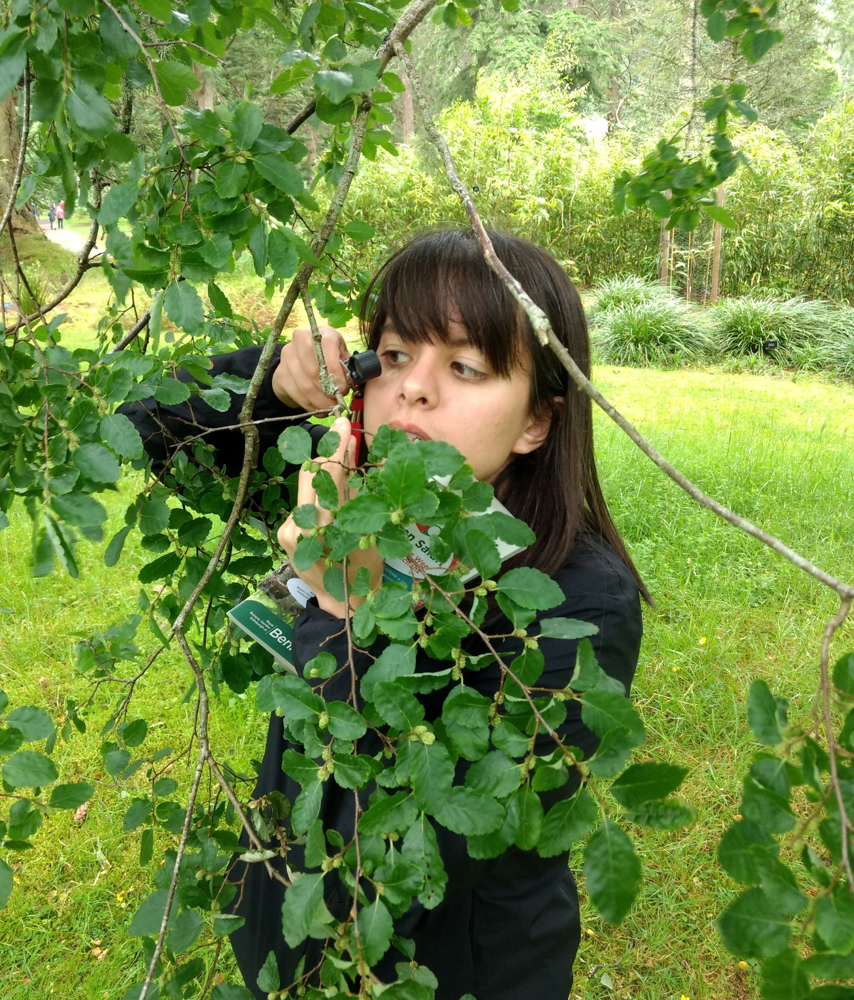

My research focuses on how human culture and cognition interact in language evolution and development,
using a multimodal approach that accounts for the role of the body in language production and comprehension. I use both experimental and naturalistic data to investigate the role of
multimodal iconicity in language learning in both children and adults.
Currently, I am a postdoctoral researcher in the Centre for Language Evolution at the University of Edinburgh.
Email: Yasamin.Motamedi@ed.ac.uk
Twitter: @YaaminMoot